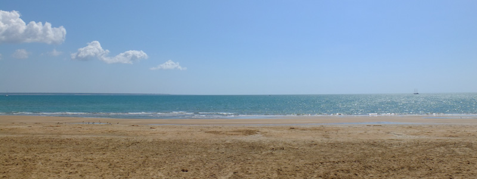
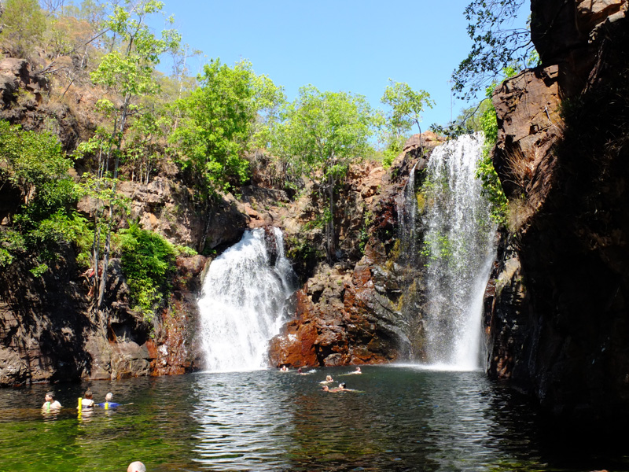
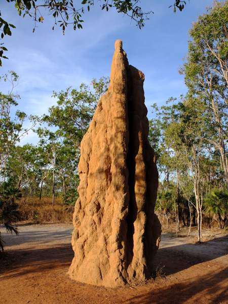
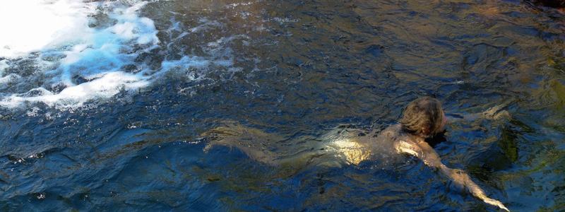
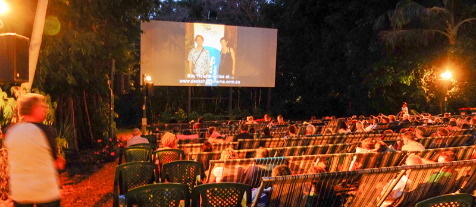

Aussie Beginnings

Choosing Darwin as our point of entry into Australia wasn't extensively thought through. The idea started (and ended) with a cheap flight from Bali, ignoring how far Darwin is from anything else in Australia. In fact, we had ignored how far everything is from anything in Australia
After three months in Southeast Asia we were used to living and traveling inexpensively and had imagined Darwin to be a welcoming city with exciting accommodation options coming out of it's ears. Our plan was to buy a van in Darwin and head off on a road trip around Australia so we also envisaged lots of Campers to pick and choose from. All of this at competitive prices, of course. After all, it was the biggest and most developed city we had been to in months!
And welcoming it was, with it's blue skies and serene suburban vastness, but it's friendliness will always mix in with feelings of abandonment and disappointment, as we struggled for days to find anywhere to sleep and finding a van to buy turned out to be challenging. Competitive it was not.

Situated in the middle of nowhere, Darwin was actually the worse place we could have chosen to start our Aussie adventure. As it is so isolated it has it's own micro economy - there are no towns nearby so you have to stay in the city and you have no choice but to pay what you're asked. In terms of the campervan market, again no competition means the asking prices where high and the quality was a bit of a joke.
Three months in Indonesia had set us up really well for a slap in the face as we paid for our first meal - $10 for a meagre pie? We knew this was no Indo but still it took a while to sink in. So, we had been fairly disorganised with planning what was a very short time - three months - to see a very big country. But we believed things would slot into place naturally. Plus, there wasn't much we could have done in advance. No matter how much advice you get, it takes making the mistakes yourself in order to learn.

Our flight from Bali landed at 2am. Sleeping at the airport and finding ourselves a room the next morning was the immediate plan. A sleepless plan. In the morning, we realised no accommodation was available anywhere and that by a stroke of luck our visit coincided with the Darwin Festival. Walking around and judging the book by the cover you'd have asked, "But where are all the people in this town?". I guess they were all in their hotel rooms.
At 6pm, after dragging our backpacks around all day, our options included going back to the airport for the night. Which would have been much better than the stinkiest and most overpriced hostel dorm room offer we succumbed to in the end. At 9am the next day we got kicked out of the hostel and told to come back again at 6pm to see if they had rooms. We met people working around Darwin who checked in and out of hostel rooms every day - not much fun!
It was a stressful day, filled with unexciting campervan viewings and the desperate search for somewhere to stay. We tried the HelpX and Couchsurfing websites, and even looked at Gumtree for short term lets. It wasn't looking good. Finally, when we were preparing to admit defeat and beg the hostel for it's smelly dorm, an idea solved all our problems and rescued our memories of Darwin: Campervan Hire! We were so concentrated on finding one to buy that we forgot we could just rent one.

Over the next 5 days we had a home, somewhere to sleep and cook, and even a fridge! All of this on wheels so we also had transport. And it didn't smell of other people's socks! We intensified our search for our magic mobil and even managed to fit in a weekend dash to Litchfield National Park where we saw our very first of many termite mounds and indulged in a few cooling skinny dips in the crocodile-free cascading pools.
Back in Darwin, the travelers morning shower and evening dinner congregations at Mindil Beach was becoming a bit too familiar. After a week we really just wanted to be on the road. None of the vans on offer were really worth the asking price, and we nearly fell for the lure of a big 4WD Land Cruiser. In the end the winner was a white Mitsubishi Express, which we named Polar Bear, with LPG and petrol which should help the budget, and we were off.

I know it wasn't Darwin's fault. It was a sunny, spacious, seaside gem, with a stunning crocodile infested coastline, an elegant Library in the Parliament House that took me back to the days when I was a student. Its people were friendly, and it was good to see the Aborigine community as one of the most integrated in Australia. And the there is the outdoor Deckchair Cinema - definitely a highlight - where you can marvel at the stars on a hot summers night and watch a film. Ironically we watched Chasing Ice, a documentary about melting icebergs and global warming, which gave us a guilt infused goodbye as we set off to drive our carbon footprint through the roof.
Comments